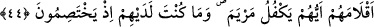

eğitmiş ve yetiştirmiştir. Seni cennetten gönderdiği rızıklarla rızıklandırmış, yüksek
kerâmetlerle ikrâmda bulunmuştur.
“Ve temiz kılmıştır..” Küfürden, mâsiyetten, kötü fiillerden, çirkin âdetlerden,
erkeklerin dokunmasından, hayzdan ve nifastan temiz kılmıştır. Demişlerdir ki: Meryem
hayız görmezdi. Allah, Meryem’i ayrıca yahûdîlerin töhmetlerinden ve yalanlarından
onun çocuğunu konuşturmasıyla temizlemiştir.
“Ve seni âlemlerin kadınları üzerine mümtaz kıldı.” Îsâ’yı sana babasız vermiş ve
bu başka bir kadına nasip olmamıştır. Ve ikinizi âlemlere âyet; delil kılmıştır.
43. Ey Meryem! Rabbine ibâdet et; secdeye kapan, (O’nun huzurunda)
eğilenlerle beraber sen de eğil.
“Ey Meryem, huşû ile Rabbinin divânına dur.” Kunût yap. Yani namaza dur ve Allah
için kıyâmı uzat.
“Secdeye kapan. Rükû edenlerle beraber sen de rükû et.” Rükünleri zikrolunarak
namazı cemâatle kılması emrolunmuştur. Kunût, kıyâmda uzun durmaktır. Âyette geçen
secde ve rükû emri, namaza riâyetin vücûbunu te’kidle bildirmekte ve ayrıca her birinin
faziletini ve birer asıl olduğunu açıklamaktadır. Secdenin rükûdan önce zikrolunması, ya
şeriatlarına göre tertibin böyle olmasından, ya da secdenin namaz içinde en faziletli
rükün ve hudû mertebelerinin en üstünü bulunmasındandır. Âyetteki bu sıra, hâricî
tertibin de böyle olmasını gerektirmez. Bilakis ona lâyık olan aşağıdan yükseğe terakkî
etmektir. Yahut da rükûun, “rükû edenlerle beraber rükû et” emriyle beraber
zikrolunması içindir. Çünkü, rükû etmeyen namaz kılmış olamaz. Denilmiştir ki:
Meryem’e kunût emrolununca kalkıp, namaza başladı, uzun süre kıyâmda durması
sonucu ayakları şişti.
44. (Rasûlüm!) Bunlar, bizim sana vahiy yoluyla bildirmekte olduğumuz gayb
haberlerindendir. İçlerinden hangisi Meryem’i himayesine alacak diye kur’a
çekmek üzere kalemlerini atarlarken sen onların yanında değildin; onlar (bu
yüzden) çekişirken de yanlarında değildin.
“Bunlar, sana vahyetmekte olduğumuz gayb haberlerindendir.” Yani yukarıda
anlatılan Hınne, Meryem, Îsâ, Zekeriya, Yahya kıssaları gayb haberlerindendir. Bunların